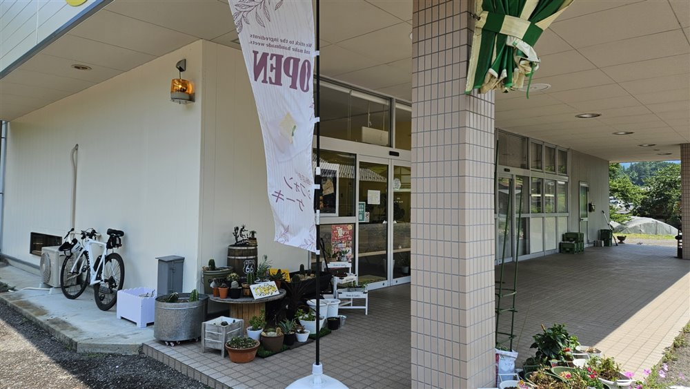
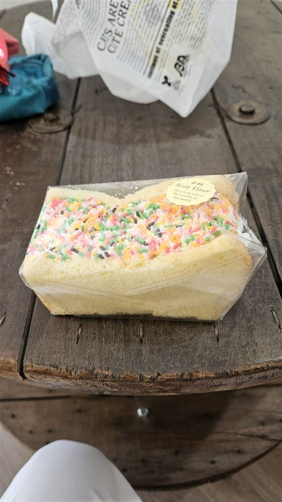
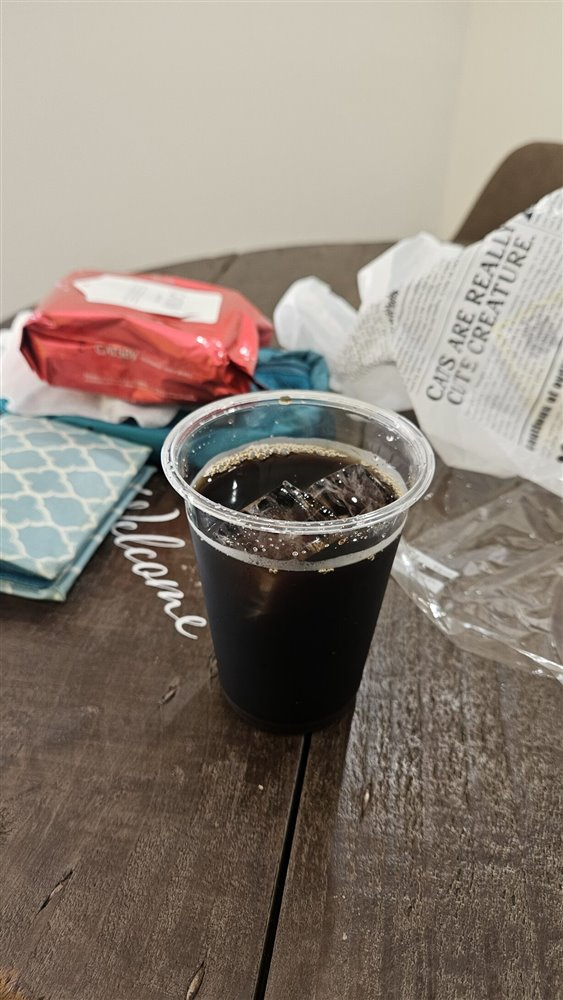
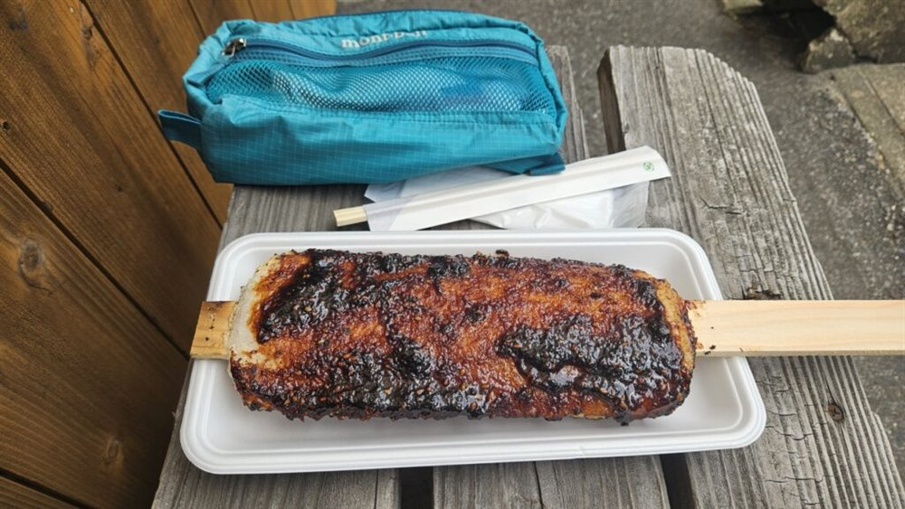
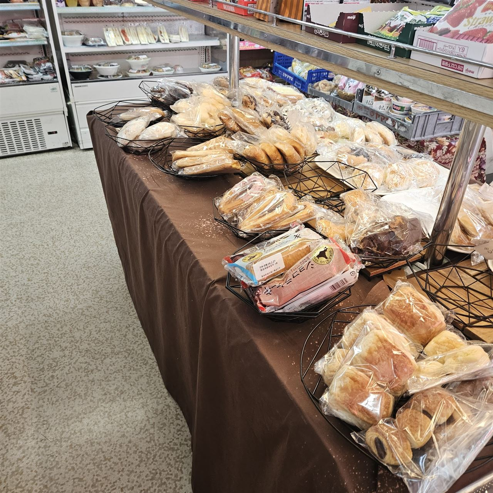
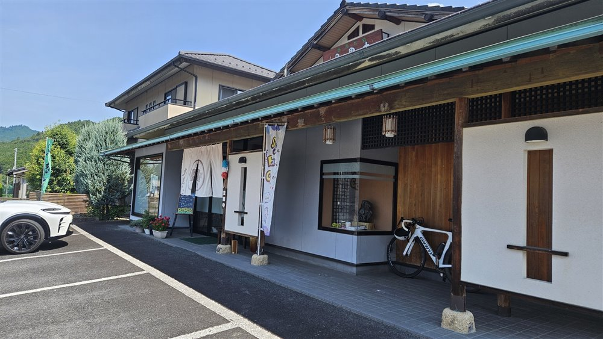
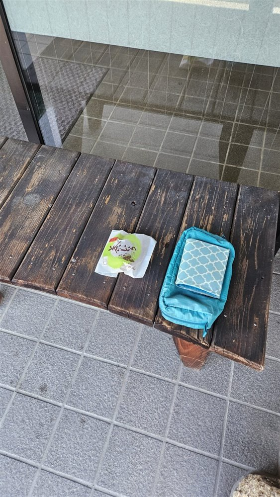
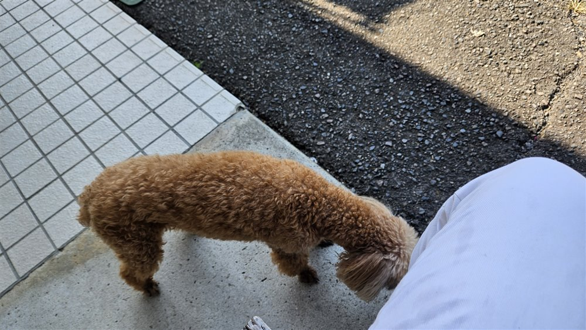
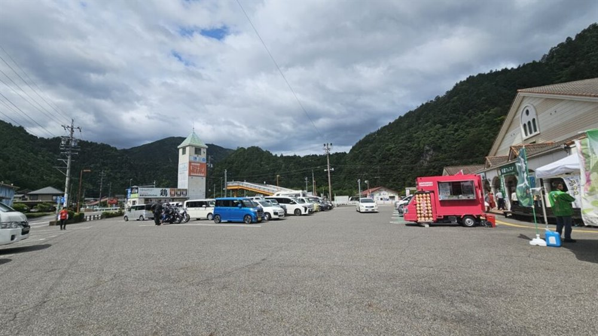
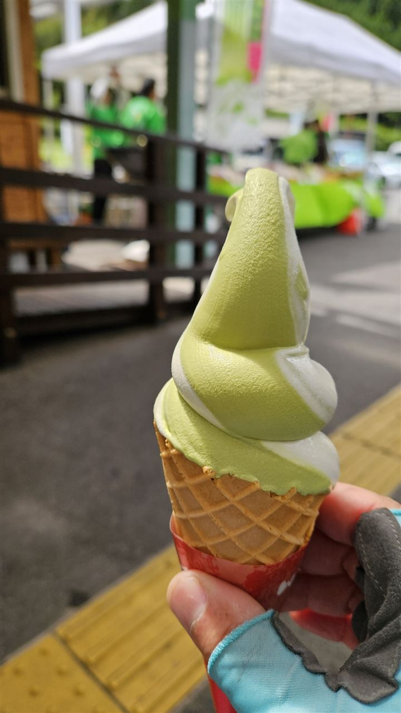

白川一周･シライチのコースがあるエリア｡佐見や黒川､神渕､七宗のお店です｡
白川町佐見の､メニューの多さに頭がフリーズするカフェレストラン


白川グランフォンドの試走で､お昼ごろに立ち寄りました｡いつも壁いっぱいのメニューで頭がフリーズするほど､品数が豊富なお店です｡定番は太陽のカレーですが､この日はオムライスを｡野菜とチキンがたくさんで､彩りがきれいなのにご飯にもしっかり味がついています｡
食後にシソシロップと冷やしたきゅうりを出してもらい､扇風機を強で当ててもらって生き返りました｡白川の人はみんなやさしい､と実感するお店です｡白川一周・シライチのコース上にあるので､補給にもぴったりです｡
白川町観光協会おすすめ､センスのよさがひと目でわかるカフェ

白川町観光協会さんがおすすめしてくれているカフェです｡桜峠を下った麓にあり､ぜったいセンスのいいお店だと一目でわかります｡
今年の白川グランフォンドは､白川町観光協会さん､白川町､そして山ト風トさんの協力のもとで開催されます｡
暑さの中､アイスコーヒーをごちそうしてくれたシフォンケーキのお店



白川グランフォンドの試走で､道の駅東白川から桜峠へ向かう途中に見つけたお店です｡ストアーがあったはずの場所に､いつの間にかできていました｡
あまりの暑さに｢中で食べていってください｣と声をかけていただき､アイスコーヒーまでごちそうに｡ふわふわのシフォンに､ほわほわのクリームで､甘すぎないのがうれしいおいしさです｡
神渕のカフェで､ちょっと変わった｢かぶちぃーの｣を


神渕ライドで立ち寄る､セキサイおなじみのお店です｡名物は｢かぶちぃーの｣｡カプチーノにかけた名前でしょうか､ドリンクの中にありへい巻が突っ込んであるという､ちょっと特殊な飲み物です｡
ミルクバージョンがめちゃくちゃおいしく､この日はコーヒーバージョンをいただきました｡トーストのセットも人気です｡
芋おこわか五平餅のモーニングが食べられる､七宗町の休憩スポット

七宗町にある､セキサイの七宗サイクリングでおなじみの休憩スポットです｡モーニングは､芋おこわと五平餅のセットの2種類から選ぶことができます｡
富加から間見峠､国道41号の歩道を経由して向かう54km･獲得標高700mのコースは､ちょうどよい強度のサイクリングです｡七宗御殿は､その途中のエイドポイントになっています｡
※写真は､別のお店の五平餅のイメージ写真です｡
白川町のパン屋さん｡パンを買うとコーヒーをもたせてくれます



白川一周・シライチのコース序盤で立ち寄るパン屋さんです｡朝にパンを買ったら､｢コーヒー持ってって!!｣と言っていただき､思わぬモーニングになりました｡
ベンチなのかテーブルなのか微妙な高さの木のテーブルでいただくと､朝から気持ちがほわほわします｡この先すぐ400mの登りが待っているので､ここでしっかり補給しておきましょう｡
白川口で唯一のパン屋さんで､種類がとにかく豊富です｡パンが所狭しと並び､値札はありません｡惣菜も多く､黒川の大黒屋さんの和菓子もここで手に入ります｡
白川町の茶畑のそばにある､冷たいお茶とケーキの直売所


白川町観光協会さんおすすめのお店です｡ケーキを買うと､ギンギンに冷えたお茶と一緒に出してくれました｡お茶は二番茶で､青みの強い緑色と､風味豊かですっきりとした味わいが特徴です｡
白川は寒暖差が大きく､お茶づくりに向いた土地です｡以前にはほうじ茶プリンや緑茶アイスをいただきながら､テラスでカフェタイムを楽しみました｡お店の方がやさしく､ライドの最後に立ち寄るエイドとして最高です｡
佐見の入口にある､パンを買える昔ながらの名店

ガラパゴスカフェへ向かう途中､下佐見にある名店です｡自転車を停めて休憩していると､お店のおじさんが｢花粉すごくない?｣と話しかけてくれました｡
ここで買ったパンは､この先の佐見の登りへ向けた大事な補給食です｡
神渕の峠の頂上にある和菓子屋さん


神渕ライドで立ち寄る､峠の頂上にある和菓子屋さんで､見晴らしがとてもよいお店です｡お店に入ると､ちょっとしたお菓子とお茶をいただけます｡
おみやげに和菓子をたくさん買ったら､おまけもしてくれました｡どら焼きやまんじゅうは背中のポケットに入れて持っていけます｡袋坂峠方面へ向かうライドの補給にもぴったりです｡
黒川の名店､甘すぎない茶クリームどら焼きと大福


白川町最大の集落､黒川にある和菓子屋さんです｡人気は､アウトレットの茶クリームどら焼きと大福｡甘すぎない､ちょうどいい甘さで､走ってきた体にしみわたります｡
向かいのぬいや商店さんのベンチに座って食べるのがおすすめです｡心地よい風が吹いてくるので､ついのんびりしてしまいます｡大黒屋のクロは､黒川のクロではないようです｡
｢アコウのスタバ｣と呼ばれる､白川町赤河の商店

白川町の赤河（あこう）にある商店で､略してFSSです｡開店前に着いてしまったのに､軽トラで来た店主のおじさんが､特別にエアコンをつけてドアを開けてくれました｡
パンとジュースを買って､外のベンチでひと休み｡犬がよってきてくれて､ほわほわした気分になれる､ほんとうにいいお店です｡白川一周・シライチのコース上にあります｡
家から50km地点､白川茶ソフトでひと休み


白川町にある道の駅です｡関市から50kmほどの地点で､黒川方面へ向かうライドの最初の休憩ポイントになります｡
名物の白川茶ソフトは､あまり甘すぎないので､ぺろりと食べられます｡お店の人に聞くと､白川の町までは片道7kmとのことでした｡
※紹介は､トマト工業ブログ(2016年〜2026年)の記事をもとにしています｡営業時間や定休日は変わることがあるので､お出かけの前にご確認ください｡